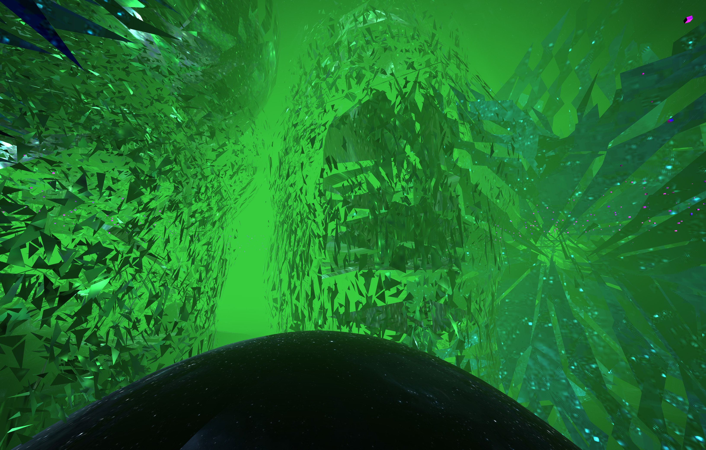
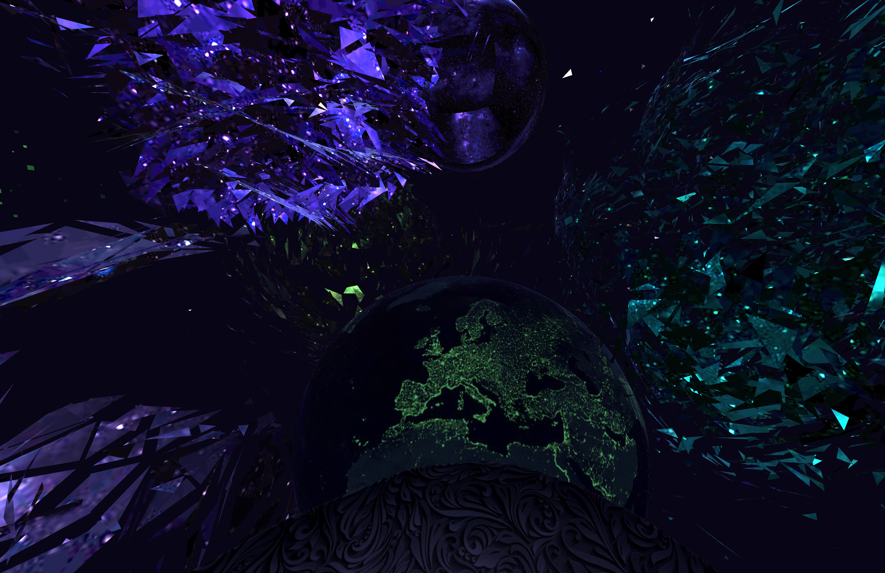

Ocean of Thought
Antti Jäderholm
-

- 
- 
Experience Now
Description
Ocean of Thought is a VR music experience made by Antti Jäderholm for the American electronic music artist Machinedrum, currently signed on the Ninja Tune label. It’s a magic carpet ride through the unconcious mind, guided meditation instructions included. Essentially, a WebVR music video Ocean of Thought uses 3D models, animation, and audio reactive graphics to augment the aural experience of Machinedrum.
Bios
Antti Jädertpolm aka Fthr Productions is a digital artist that hails from the 90’s demoscene, producing a plethora of productions across evolving platforms. He is also the Founder of Vizor.io, a VR publishing platform for 360 tours, stories, and sites. Travis Stweart better known as Machinedrum, the musician, is a prolific artist and electronic music performer from North Carolina. Stewart has played such venues as the Sydney Opera House, the Nokia Theater in New York City, the Sonar Music Festival in Barcelona, and SXSW.
Compatibility
| Chrome | Firefox | Safari | |
|---|---|---|---|
| Desktop | ✔ | ✔ | ✔ |
| Mobile | ✔ | ✔ | ✔ |
| Oculus | ✔ (Chromium) | ✔ (Nightly) | |
| Vive |
Note: You may need to do some special setup for your browser to work with a VR headset like the Oculus Rift or HTC Vive.